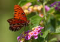
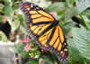
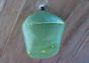
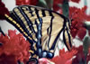
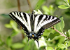

Beautiful Butterflies

Fritillary
Fritillary butterflies are known for their orange wings with black markings.
They are commonly found in meadows and open areas.
Monarch Butterfly

The Monarch butterfly is famous for its long migration across North America.
It has bright orange wings with black veins and white spots.

During its life cycle, the Monarch forms a chrysalis before emerging as a butterfly.
Swallowtails

Tiger swallowtails are large and yellow with black stripes.

Zebra swallowtails have distinctive black and white striped wings.
Blue Morpho
The Blue Morpho butterfly is known for its bright blue wings that shimmer in the light.